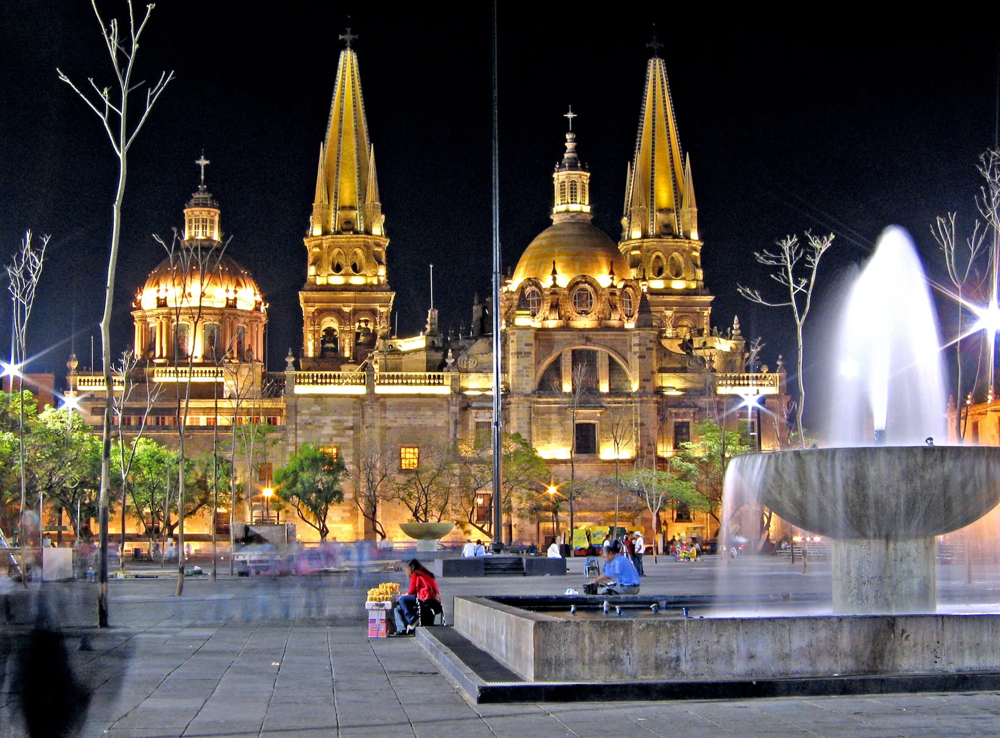

Blog del Restaurante
¡Bienvenidos a nuestro blog! Aquí encontrarás noticias, reseñas y consejos sobre nuestros platillos y eventos.

El famoso restaurante de hamburguesas "Burger's House" acaba de
inaugurar su nueva sucursal en Guadalajara, y los amantes de las
hamburguesas no podrían estar más emocionados. La nueva ubicación se
encuentra en el corazón de la ciudad, en la calle López Cotilla, y
promete ofrecer la misma calidad y sabor que han hecho de
"Burgermanía" una de las cadenas de hamburguesas más populares en
todo el país. Con una decoración moderna y acogedora, la nueva
sucursal cuenta con un amplio espacio que puede acomodar a más de
100 comensales.
Además de su famosa selección de hamburguesas gourmet, que incluye
opciones vegetarianas y veganas, la sucursal de Guadalajara también
ofrecerá cervezas artesanales locales y una amplia variedad de
opciones de postres para satisfacer los antojos de todos los gustos.
La inauguración de la nueva sucursal fue un gran éxito, con una gran
cantidad de personas que acudieron al lugar para probar las
deliciosas hamburguesas y disfrutar del ambiente animado. Los
clientes elogiaron la calidad de la comida y la amabilidad del
personal, y muchos de ellos dijeron que ya están planeando volver
pronto para probar otras opciones del menú. Si eres un fanático de
las hamburguesas y te encuentras en Guadalajara, no puedes perderte
la nueva sucursal.